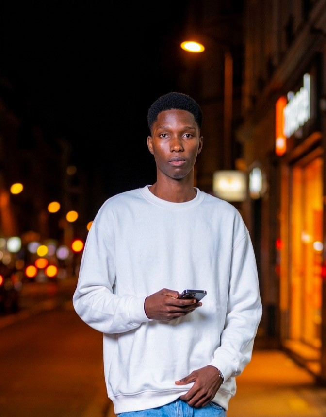

À propos de moi

Mon parcours et Approche
Je suis Saved-Obed, développeur Fullstack orienté Backend.
Je m'efforce de construire des ponts entre les idées et la réalité numérique, bien au-delà des lignes de code.
Chaque projet est pour moi l'occasion d'apprendre, d'expérimenter et de repousser mes limites.
Mon objectif est de transformer des concepts complexes en solutions simples, intuitives et performantes.
Et aujourd'hui où l'intelligence artificielle redéfinit le métier d'ingénieur logiciel, il n'y a rien de mieux qu'un développeur qui sait s'en servir.
Vibe coder, c'est bien : vous pouvez bien le faire. Mais vibe coder en ayant des bases solides, c'est encore mieux !
Que vous soyez une startup, une PME ou une grande entreprise, je suis à votre disposition pour vous accompagner dans votre transformation digitale.